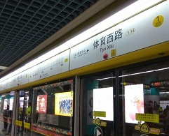
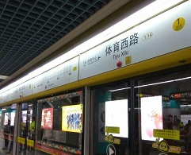
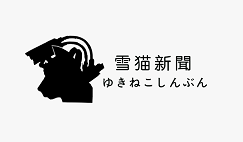
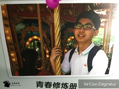
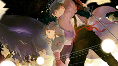

- 2014~2016
-
Workshop雪猫工作室时期
 2014~2015年,雪猫二人于广州市第四十七中学SoulMirror漫社进行活动。活动期间开始产生了游戏制作的想法，并制作了一款以某蛋姓男子为主角的半成品游戏，而之后在高二期间以雪猫工作室的身份集结了几位制作人开始着手制作更大的项目。成立了雪猫工作室后，在学习之余开启了一个非洲题材的冒险游戏企划，而成员时常在体育閪路某清吧进行制作会议。虽然这个游戏企划在不久后因各种原因咕咕咕，但其运用到的脚本技术为之后的游戏制作提供了一定的参考。2016年，开始逐步转入高三备考状态的雪猫工作室成员停止了主要的制作活动。但对于将来毕业后的活动，二人有着更长远的打算。
2014~2015年,雪猫二人于广州市第四十七中学SoulMirror漫社进行活动。活动期间开始产生了游戏制作的想法，并制作了一款以某蛋姓男子为主角的半成品游戏，而之后在高二期间以雪猫工作室的身份集结了几位制作人开始着手制作更大的项目。成立了雪猫工作室后，在学习之余开启了一个非洲题材的冒险游戏企划，而成员时常在体育閪路某清吧进行制作会议。虽然这个游戏企划在不久后因各种原因咕咕咕，但其运用到的脚本技术为之后的游戏制作提供了一定的参考。2016年，开始逐步转入高三备考状态的雪猫工作室成员停止了主要的制作活动。但对于将来毕业后的活动，二人有着更长远的打算。 - 2016~2017
-
转型雪猫社时期在进入高三后，考虑到更长远的发展，雪猫工作室更名为雪猫社。但在高三期间主要以雪猫新闻社的身份进行活动，主要提供娱乐新闻的推送。同时也是在这个时期，雪猫社拥有了自己的官方网站并提供了邮件订阅。这些活动为社员提供了良好的新闻撰稿能力培训，也许高考语文的分数就是这么来的罢(笑);这是一篇当时推送的著名文章，为订阅者提供了很长一段时间的快乐时光。 高中毕业后，雪猫社开始筹备第一款游戏SoulMirror，并对此进行了多项测试以便能够长时间制作。之后这个游戏的计划搁置,素材则留作后续作品的参考。
- Jul 2018
-
参赛2018网易Minigame2018年6月份，得知比赛信息的社长二人决定进行参赛的尝试，通过这次活动雪猫社扩充了制作阵容，成员遍布各地(指东北西北华南)并跨越两大洲(北美与亚洲)。而经历一个月的努力获得了复赛入围奖的良好成绩，领了猪场送的周边后愉快结束这次活动。
- Jul 2019
-
参赛2019网易/腾讯
 2019年6月份，雪猫社决定二战网易MG，然而在人员上被规则限制难以正常发挥，加之成员学业繁重，因此网易之战止步于初赛。之后转战腾讯也是难以提交一个完成度足够的作品，无论如何这都是之后制作游戏的所需要的锻炼过程。
2019年6月份，雪猫社决定二战网易MG，然而在人员上被规则限制难以正常发挥，加之成员学业繁重，因此网易之战止步于初赛。之后转战腾讯也是难以提交一个完成度足够的作品，无论如何这都是之后制作游戏的所需要的锻炼过程。 - Sep 2019
-
准备参考/草图/LOGO
- Oct 2019
-
制作HTML/CSS/JS
首先就忽略高保真图这个步骤直接开始制作，感谢Bootstrap框架带来的便利，使我能够迅速的构建出一个具有一定动效的响应式页面。最主要的是其提供的CSS样式和jQuery能够使页面更规范，结合我自己写的专属CSS/JS能够很好运作
CSS方面主要采用了Bootstrap自带的样式，并根据实际需求自己调整写在了yukicat.css。一些比较重要的CSS样式会加上注释。
JS方面主要有右下角的BTT、本页面的模态框、部分按钮的点击提示以及禁止复制和F12的网页保护措施（这个功能暂时被注释掉了，但可以通过查看源代码看到这一段）
-
上线测试和上线
开发全程使用Visual Studio Code，考虑到服务器带宽限制，测试主要采用本地环境，测试完成后会把合适版本上传至服务器。服务器环境主要用于多设备的浏览测试，便于根据不同设备的浏览状况及时调整样式。
使用域名来源于腾讯云注册的yukicat.net，并于2019.3完成了转入备案。服务器使用AlibabaCloud-Shenzhen，并部分采用Cloudflare CDN进行加速。
-
致谢不完全列表